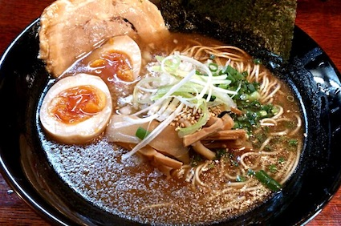
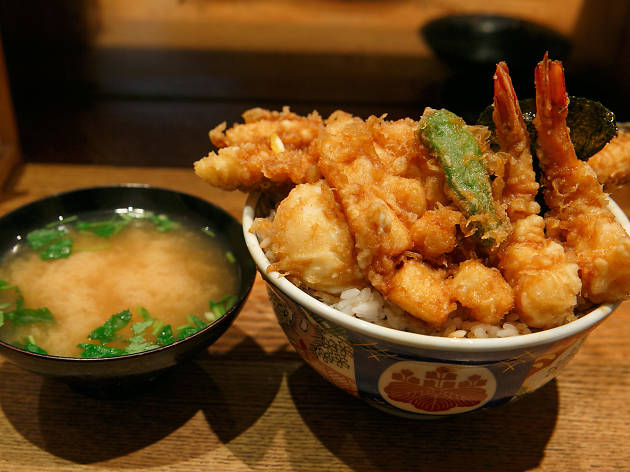
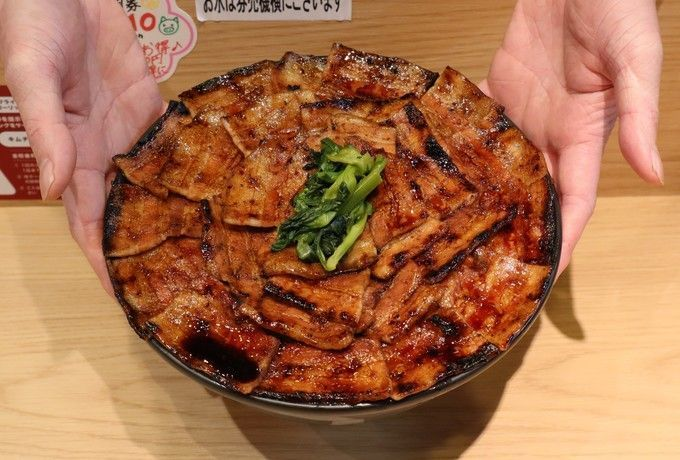
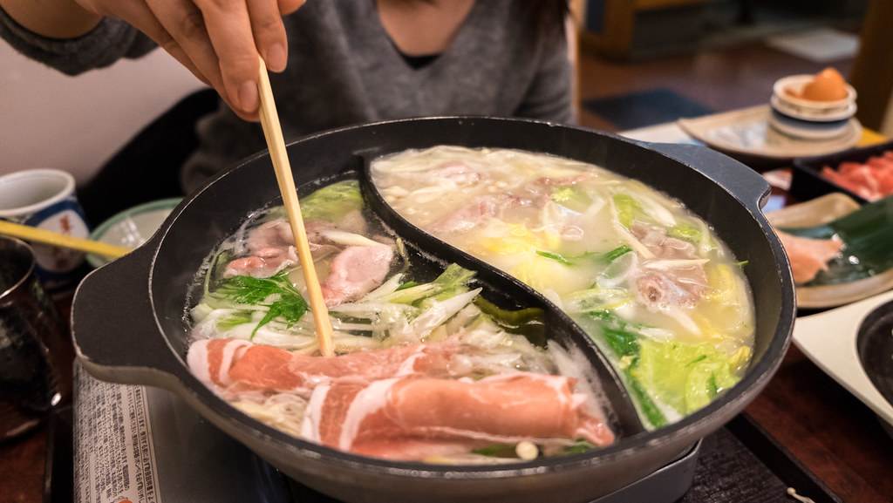
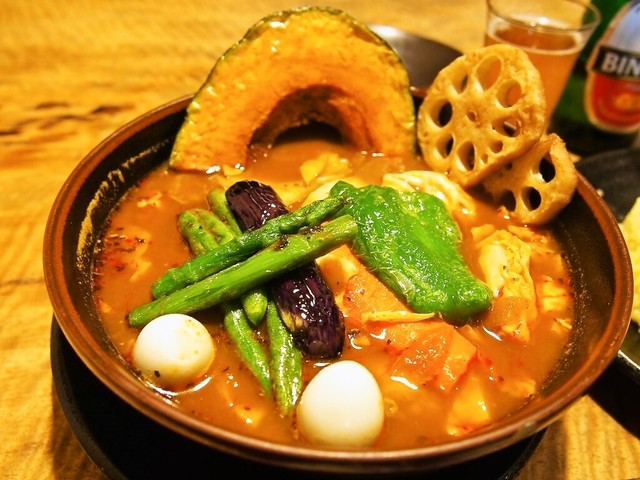

The Top 10 Dishes of Japan
These are the top 10 most popular dishes in Japan:
- Ramen
- Tempura
- Butadon
- Shabu Shabu
- Soup Curry
- Yakiniku
- Tonkatsu
- Sushi
- Jingisukan
- Okonomiyaki
Ramen
Ramen is well known around the world. In America, we eat cup of noodles or ramen in a package. In Japan, restaurants prepare ramen in delicious soup full of vegetables and some meat. Ramen is great for fall and winter time when it gets cold. My favorite ramen is made with tonkatsu inside, which is found in a small mom and pop shop.
Tempura
Tempura can be served with rice, soba or udon. Tempura is normally made with seafood and vegetables. The best tempura is found in Izu on the main Island of Japan. Some places that make tempura put some special sauce on them that takes the flavor to another level. My favorite are shrimp, squid, oyster, pumpkin, and okra tempura. Tempura is definitely a favorite of mine.
Butadon
This dish is one that many foreigners have no idea exist when they travel to Japan. Thinly sliced pork with sauteed in a special sauce that taste heavenly. Something is strange about eating Butadon because you can eat more than you normally can eat. If you don't like rice, there is no problem because they meat flavor is so good, eating rice is easy. This is probably my favorite way to eat pork.
Shabu Shabu
Morbi tincidunt augue interdum velit euismod in pellentesque massa. In ante metus dictum at tempor commodo ullamcorper a lacus. Quis enim lobortis scelerisque fermentum dui faucibus in. Nisl vel pretium lectus quam id leo in vitae turpis. Tincidunt id aliquet risus feugiat in ante metus dictum at. Malesuada fames ac turpis egestas maecenas pharetra convallis posuere. Interdum varius sit amet mattis vulputate. Elementum sagittis vitae et leo duis ut. Suscipit tellus mauris a diam. Porttitor lacus luctus accumsan tortor posuere ac ut consequat semper. Faucibus in ornare quam viverra. Quis vel eros donec ac.
Soup Curry
Et ultrices neque ornare aenean. Felis imperdiet proin fermentum leo vel orci porta non. Vitae ultricies leo integer malesuada nunc vel risus. Sit amet aliquam id diam maecenas ultricies mi eget. Libero volutpat sed cras ornare arcu dui vivamus arcu felis. Vitae congue eu consequat ac felis. Aliquam ut porttitor leo a diam sollicitudin tempor id eu.